Xitao Wang
Hello! I'm Xitao Wang. First of all, thank you for reading this. I would like to share my experience and background with you, and I'm very much looking forward to contributing my abilities to you (that is, working with you). Thank you for taking the time to consider my application, here is some of my works below.
I am an architecture student with international academic and professional experience in the UK, Italy, China, and Japan. I am currently pursuing a Master of Architecture degree at the Manchester School of Architecture, and expect to graduate in the summer of 2026 with RIBA Part 2 certification.
More about me >>
My view on architecture is fluid, but what remains constant is my belief that the space in which people live reshapes their character, further alters the relationships between people, and thus reconstructs the form of society. I have a deep interest in humanities, history, and the natural environment, which motivates me to perceive the world through firsthand fieldwork, and to observe and modify the nearby spaces through my lens and my design methodology.